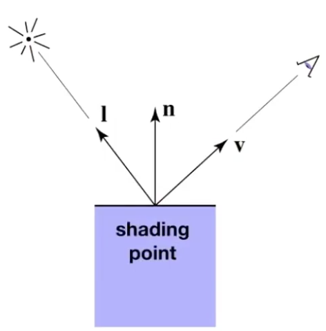
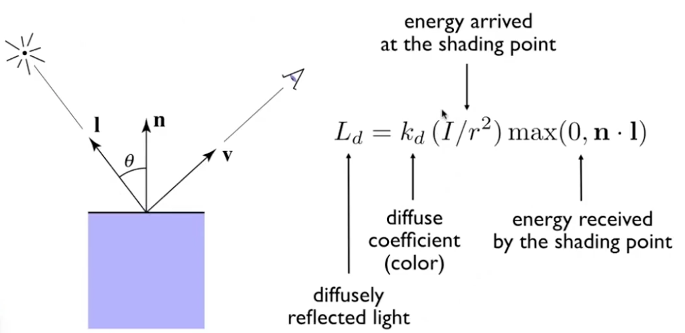

<GAMES101-现代计算机图形学入门> 学习笔记 - 着色1(shading)
文章目录
着色(shading)
对物体应用材质
Blinn-Phong反射模型 - 最基本的着色模型
光线如何与材质进行作用，如何进行反射

如上图，我们将光线简单分类成三种
- 高光(specular highlights)
- 漫反射(diffuse reflection)
- 环境光(ambient lighting)
在研究之前我们先定义一些概念

- 观察方向，v
- 面的法线，n
- 光照方向，l
- 一些面的参数(color,shininess)
注意，这些向量都是单位向量基于他们的方向
漫反射(diffuse reflection)(Lambertian shading)
入射光线均匀反射到各个方向
首先应该考虑入射的角度所造成的接收到光强的损失
只有当入射光线与平面垂直的时候才能完整的接受所有光的能量，而入射角度越倾斜损失的能量越大，具体来说，我们应该将光强乘上一 个$\cos \theta = l \cdot n$
除了入射角度之外，光源与照射点的距离也应该考虑，直观来说，离得越远当然强度也就越弱！具体来说如图所示
图中中心为一个点光源，光线均匀的向周围发射，可以想象光源发射出来的能量其实是一定的，那么在任意两个圈上接受到的能量之和一定相等。在空间上来看，这些能量是分散在球的表面积。并且距离点光源越远，其 表面积越大，所以我们将能量将于半径的平方:$ I / r^2$
因此我们得到一个比较准确的漫反射模型$ L_d = k_d(I/r^2)max(0, n \cdot l ) $

PS：跟观察方向无关 & max是为了剔除夹角大于90°的光
高光(specular)/镜面反射
如图所示R为镜面反射方向,
除了考虑漫反射中提到的光源到反射点的距离rrr之外，需要注意的是，观察方向在镜面反射时是很重要的，具体来说，只有当观察方向集中在反射方向周围很近的时候才能看见反射光，因此在镜面反射中会考虑R与v的夹角
这里我们乘了一个指数p，因为离反射光越远就越不应该看见反射光，需要一个指数p加速衰减，如图

Blinn-Phong模型
如上文所提，我们将反射方向与人眼观察方向夹角替换成如下图所示的一个半程向量h和法线向量n的夹角。因为当v接近镜像反向，相当于h和n接近
这样做可以加快计算，提升效率。
环境光(ambient)
因为来自于环境的光太复杂了，所以做了一个近似的简化模型:$L_a = k_aI_a$
Blinn-Phong反射模型
着色方法/频率
flat shading
面着色，顾名思义以每一个面作为一个着色单位。模型数据大多以很多个三角面进行存储，因此也就记录了每个面的法线向量，利用每个面的法线向量进行一次Blinn-Phong反射光照模型的计算，将该颜色赋予整个面.
gouraud shading
对每个三角形的顶点进行一次着色，内部颜色通过插值计算。那么逐顶点法线法线怎么计算呢。做法其实很简单，将所有共享这个点的面的法线向量加起来求均值(面积)，最后再标准化/归一化就得到了该顶点的法线向量了
phong shading
每个像素都进行着色。通过插值计算每个点的法线，因为三角形的三个顶点由上面可以得到。逐像素法线呢？我们可以通过重心坐标计算，下文会继续说
总结一下，一般来说phong着效果已经很不错了。
渲染管线/流水线
所谓图形渲染管线指的是一系列操作的流程，这个流程具体来说就是将一堆具有三维几何信息的数据点最终转换到二维屏幕空间的像素, 整个图形管线的步骤可能有不同的分法，不一定就下图所述的5部分，但整体流程一定是一样的
顶点处理(MVP变换)
所有的顶点数据进行Model，View，和Projection的变换，最终得到投影到二维平面的坐标信息

光栅化
第二步三角形处理也十分容易理解，就是将所有的顶点按照原几何信息，变成三角面，每个面由3个顶点组成。得到了许许多多个三角形之后 接下来的操作自然就是三角形光栅化了
深度测试
形成三角形之后，判断可不可见
着色
着色可以发生在两个阶段：顶点着色或者片元着色
最后一步，Framebuffer的处理，就是将所有的像素颜色信息整合在一起，输送给显示设备加以显示
参考
文章作者 dingding
上次更新 2020-06-23